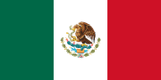

INICIO
¿QUIÉNES SOMOS?
NUESTRA HISTORIA
NUESTRO TRABAJO
¿CÓMO SUMARTE?
CONTACTO

✖
Español
 Inglés
Inglés
INICIO
¿QUIÉNES SOMOS?
NUESTRA HISTORIA
NUESTRO TRABAJO
¿CÓMO SUMARTE?
CONTACTO
Inglés
INN CHAMBA I.A.P. es una organización sin fines de lucro que desde sus inicios fue constituida para lograr un cambio positivo mediante actividades asistenciales como capacitaciones, cursos, seminarios y talleres en temas de salud, medio ambiente, capacitación para el trabajo y fomento de la economía popular, mismas que servirán como herramientas de trabajo para un futuro y de esta manera hacer sectores más autosensibles en cuanto a su economía teniendo como beneficiarios principales a personas, sectores y regiones de escasos recursos; a personas del sector vulnerable ya sea por su edad, sexo, por contar con alguna capacidad especial física, por pertenecer al sector rural; entre otros.

VISIÓN
Ser una Fundación reconocida nacional e internacionalmente por sus servicios educativos y su gestión de proyectos sociales innovadores , solucionando problemáticas actuales.
Restaurar el tejido social que ha sido dañado a lo largo del tiempo por cuestiones de género, edad y nivel socioeconómico, una comunidad activa y participativa en aplicar las estrategias básicas de INN CHAMBA I.A.P. Desarrollar un centro de innovación e inteligencia que promuevan igualdad de oportunidades, gestionar 50 proyectos de desarrollo a grupos de trabajo y dialogar y motivar a 70 grupos de trabajo para iniciar procesos de activación colectiva, innovación y emprendimientos sociales.
Va encaminado en dar una solución al problema económico que acecha a nuestro país desde hace años
y se ha potenciado aún más en tiempos de pandemia.
ORIENTACIÓN SOCIAL SOBRE EL APROVECHAMIENTO DE FINANZAS BÁSICAS POST PANDEMIA 2022 Y 20223
Proporcionar a los alumnos un regreso a clases en aulas mas armónicas usando la técnica de la
colorimetría para atender problemáticas como el autismo, TDH, etc.
Proporcionar una herramienta técnico metodológica para el desarrollo de talleres de capacitación para personas interesadas en temas agrícolas.
SEMBRANDO CONOCIMIENTO 2020, 2021, Y 2022
Buscando el mejoramiento de la sociedad INN CHAMBA I.A.P. ha creado 4 proyectos anuales cuyo objetivo es alcanzar a llegar a más de 500 beneficiarios al año por medio de nuestros servicios.
Trabajamos con el sector vulnerable de la población en zonas marginadas, de escasos recursos o simplemente discriminadas por alguna condición física, mental, generacional o económica, otorgándoles los conocimientos y herramientas para enfrentar a una comunidad que por años se ha visto afectada por una brecha social ocasionando condiciones injustas para este gran sector.
Bajo la estructura de una fundación hemos operado con este nuevo patronato a inicios del 2020 , que por cuestiones de pandemia nos vimos obligados a suspender el proyecto de ese año para retomar labores en el 2022 con una nueva idea surgida con base a los rezagos económicos que nos dejó el COVID-19.
Somos una
Institución de Asistencia Privada
sin fines de lucro creada en diciembre del
2017
, y constituida como donataria autorizada en marzo del
2019.